| General (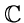omplex) Ramification |
|
| Multiplicity of ramification 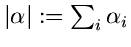 | |
| Theorem. (Eisenbud-Harris) 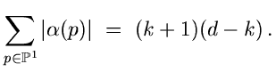 | |
| Enumeration: Given 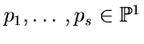 and prescribed ramification 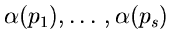 | |
|
where
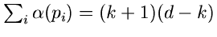, how many linear series have this
ramification ?
Example 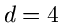 with 6 flexes: (using MAPLE ) [Number = 5] | |
| 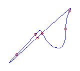 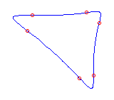 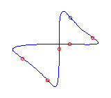 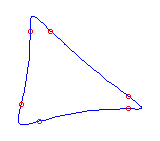 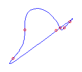 | |
| (Huber, S.-, Sturmfels, Verschelde) Numerical methods to compute these linear series: | |
|
linear series with ramification | |
|
defined by |